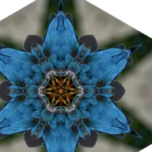

مشكال

شرائح معكوسة حول نقطة.
يكرر المشكال شريحة من الصورة في دائرة حول نقطة. القطاعات هي عدد الشرائح، والزاوية تدوّر النمط، والمركز هو المنتصف. حرّك الزاوية للحصول على نمط دوّار.
الإعدادات
| الإعداد | النوع | النطاق | الافتراضي |
|---|---|---|---|
| المركز | نقطة (X, Y) | من -1 إلى 2 | 0.5, 0.5 |
| القطاعات | رقم | من 1 إلى 64 | 6 |
| الزاوية | زاوية | من -360° إلى 360° | 0° |
| مرآة | تشغيل أو إيقاف | – | تشغيل |
| الاتجاه | اختيار | باتجاه عقارب الساعة، عكس اتجاه عقارب الساعة | باتجاه عقارب الساعة |
| النمط | اختيار | كلاسيكي، قياسي | كلاسيكي |